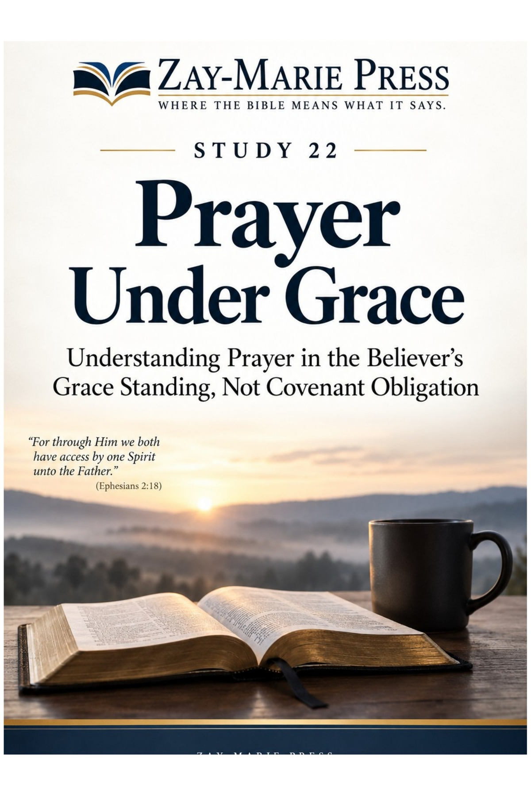
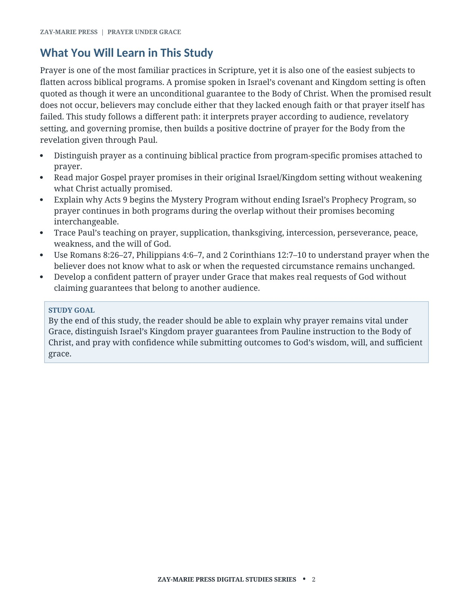
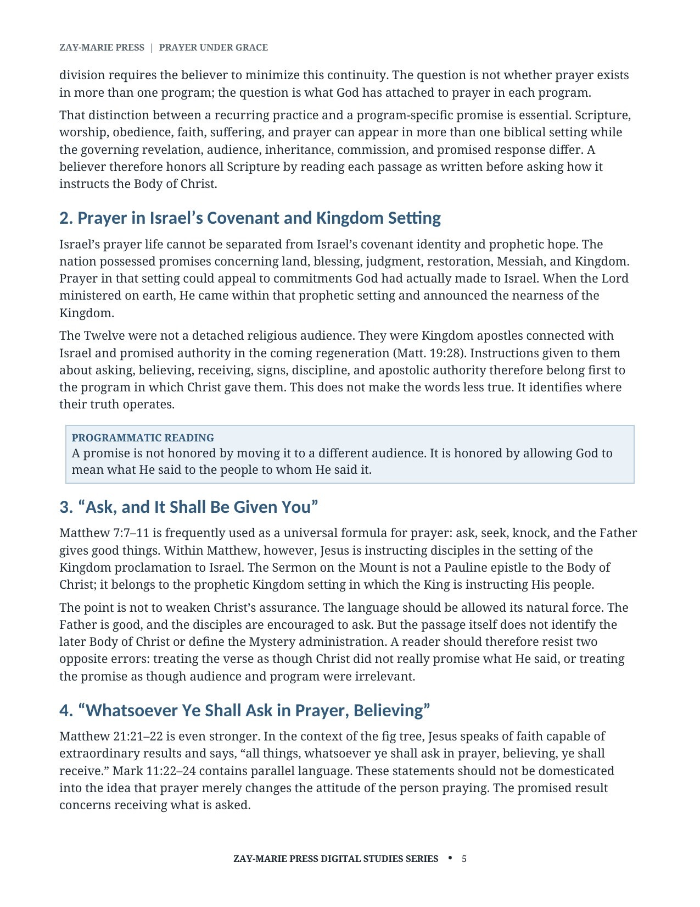
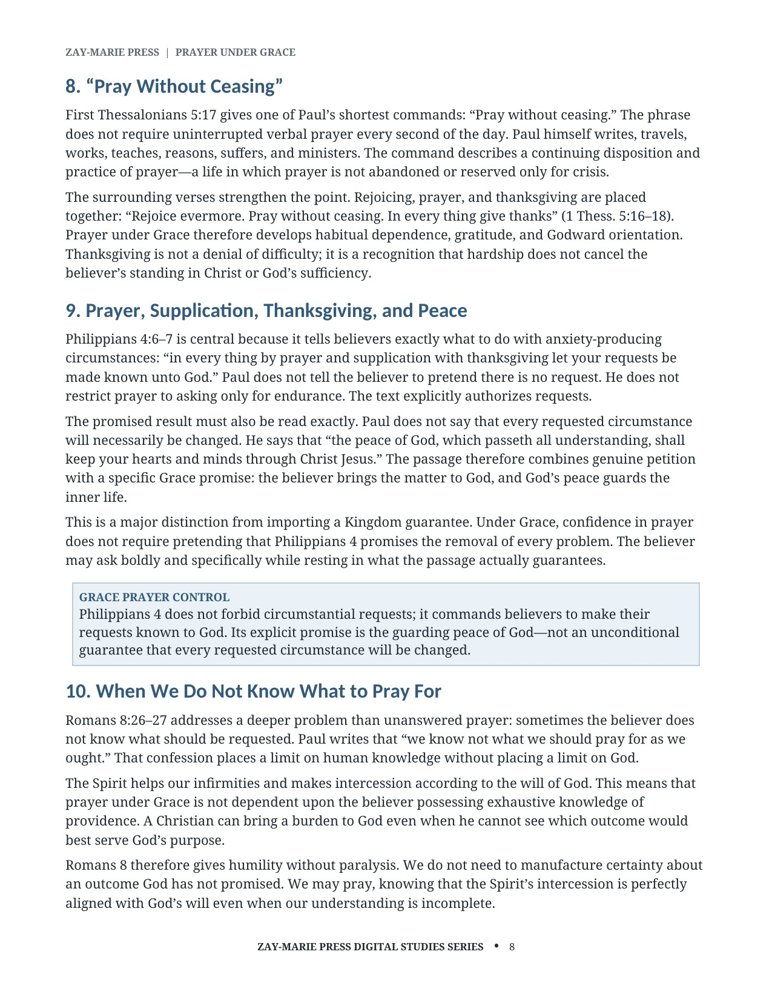
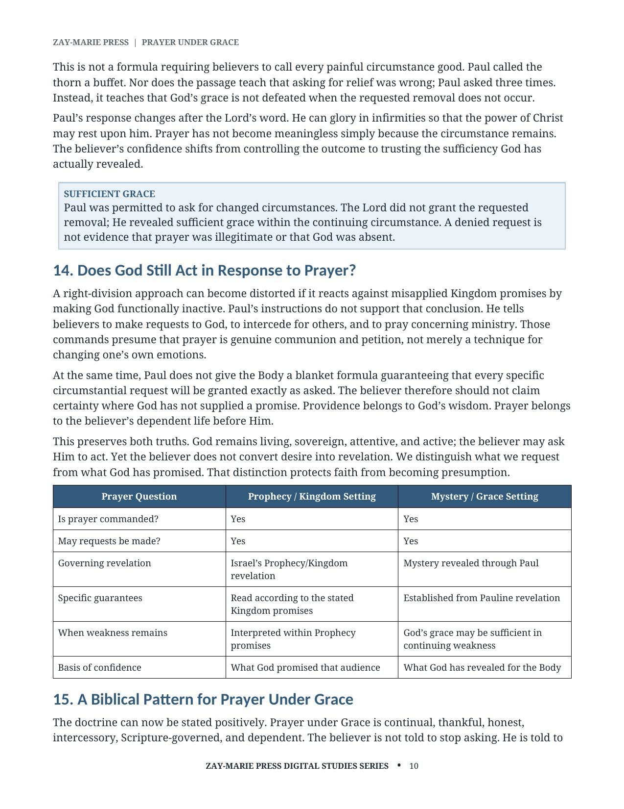

Prayer Under Grace
Understanding Prayer in the Believer’s Grace Standing, Not Covenant Obligation
A Biblical Study of Kingdom Promises, Pauline Instruction, and Confident Prayer
Prayer remains vital under Grace, but every biblical prayer promise must be read in the audience and revelatory setting in which God gave it. Kingdom promises spoken to Israel and the Twelve retain their full force in their own setting; Paul’s instruction gives the Body of Christ its governing doctrine of prayer.
This study traces Paul’s teaching on requests, thanksgiving, intercession, peace, weakness, and sufficient grace. It equips believers to pray confidently, specifically, and continually while resting in God’s wisdom and will.
What Does Prayer Under Grace Mean?
Prayer did not begin with the Mystery, and it is not diminished under Grace. Scripture records prayer throughout its history, yet a recurring practice does not make every promise attached to prayer identical for every audience.
This study reads the Kingdom prayer promises in their original setting, preserves the Acts Overlap of Prophecy and Mystery, and builds the Body’s practice of prayer from the revelation given through Paul. It shows how Philippians 4, Romans 8, and 2 Corinthians 12 shape confident prayer when circumstances remain unchanged.
How These Studies Relate
Study 22 establishes prayer under grace from Paul while reading Kingdom prayer promises in their own setting.
Study 16 — The Believer's Identity in Christ Place prayer within the believer’s present standing in Christ; this helps relate confidence before God to daily practice without promising a particular change in circumstances.
Study 39 — The Church’s Relationship to Israel’s Scriptures Use the distinction between learning from earlier Scripture and claiming a promise addressed to another audience when reading prayer teaching outside Paul’s letters.
Study 47 — Giving Under Grace Compare another practice of the believer's daily life reframed under grace rather than under a Kingdom-era command, the same interpretive move this study applies to prayer.
Build a Confident Pattern of Prayer Under Grace
Prayer Across Scripture
Begin with the prophetic vocabulary of seeing, hearing, resistance, and covenant responsibility.
Kingdom Prayer Promises in Their Setting
Read each use of Isaiah’s language in its own narrative setting without treating every citation as the final boundary.
Acts 9 and the Acts Overlap
See why Paul’s “in part” and “until” language preserves both the reality and the limits of the judgment.
Paul’s Commands for Prayer
Distinguish Israel’s national condition from the Jewish believers who remain according to the election of grace.
Requests, Peace, and the Spirit’s Help
Examine Paul’s final recorded Israelward appeal and the Isaiah pronouncement at Rome.
Sufficient Grace When Circumstances Remain
Identify the suspension of Israel’s active national Prophecy administration while retaining covenant promises and future restoration.
Trace Paul’s Prayer Instruction for Yourself
Isaiah 6:9–13
Isaiah supplies the prophetic language of hardening within a covenant setting of responsibility and judgment.
Matthew 13:10–17
Jesus uses Isaiah’s language amid the Kingdom proclamation, showing resistance before the close of Acts.
John 12:37–43
John 14–16 records Christ’s upper-room prayer promises to His disciples within their Kingdom setting.
Acts 3:19–21
Peter’s Israelward call to repentance and restoration shows the continuing prophetic appeal in early Acts.
Acts 9:1–20
Paul’s calling begins the Mystery administration while Israel’s Prophecy administration remains active.
Acts 28:17–31
Paul’s final Israelward appeal and Isaiah pronouncement establish the judicial suspension boundary.
Romans 11:1–29
Paul defines Israel’s hardening as partial, bounded, consistent with a remnant, and joined to future restoration.
Romans 11:25–29
The “until” language and God’s irrevocable calling preserve Israel’s covenantal future.
Prayer With Confidence Under Grace
“Prayer under Grace is not dependent upon the believer possessing exhaustive knowledge of providence.”
A Christian can bring a burden to God even when he cannot see which outcome would best serve God’s purpose.
Preview the Study Before You Purchase
Click any page to enlarge it for reading.
{kind=link}

What You Will Learn in This Study
Begin with the governing questions and the Body’s positive doctrine of prayer.
{kind=link}

Kingdom Prayer Promises
Read Christ’s prayer promises in their original Israel and Kingdom setting.
{kind=link}

Prayer, Requests, Thanksgiving, and Peace
Follow Paul’s instruction for bringing real requests to God with thanksgiving.
{kind=link}

Sufficient Grace and a Biblical Pattern
See how Paul’s thorn and God’s sufficient grace shape confident prayer.
A Focused Study Built for
Understanding and Teaching
14-Page Biblical Study
A focused study of Kingdom prayer promises and Pauline instruction for the Body of Christ.
Fifteen Teaching Sections
Follow the argument from prophetic hardening language to the Acts 28 judicial boundary.
Pauline Prayer Instruction
Trace the scope, remnant, duration, covenant status, and future outcome of Israel’s hardening.
Kingdom Promise Context
Examine the final recorded Israelward appeal and Paul’s Isaiah pronouncement at Rome.
Study Summary
Review the central conclusions about hardening, suspension, and future restoration.
Key Distinctions
Keep national judgment, the believing remnant, and covenant promises clearly distinguished.
Scripture-Tracing Exercise
Trace Kingdom and Pauline passages in their own audiences and revealed settings.
Teaching and Discussion Tools
Use review questions, a teaching outline, further study, and final synthesis for personal or group use.
Prayer Under Grace
15-page digital PDF · For personal use
Want More Than a Focused Study?
Digital Studies examine particular biblical subjects and difficult passages. The 40-lesson Biblical Hermeneutics course teaches a complete, repeatable method for establishing meaning in context, determining proper assignment, and making responsible application.